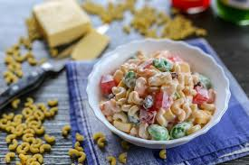

Macaroni Salad
(Filipino version)

Filipino Sweet Macaroni Salad is a popular version of mac salad in the Philippines. It is composed of
sweetened fruits, condensed milk, and mayonnaise. Cheese is an unconventional ingredient added into the mix.
This is a recipe for Sweet Macaroni Salad. It is a This version is quite similar to fruit salad. It is popular
in the Philippines, mostly in provinces.
Ingredients:
- 3/4 lb. elbow macaroni
- 1 pack Lady's Choice Mayonnaise 220 ml
- 1 can fruit cocktail 15 oz.
- 12 oz. pineapple chunks
- 1 can condensed milk 14 oz.
- 3/4 cup raisins
- 3/4 cup kaong
- 3/4 cup nata de coco
- 6 oz. cheddar cheese cubed
- 2 quarts water
Instructions:
- Cook the macaroni by boiling water in a pot. Add the macaroni. Stir and cook for 7 minutes.
Drain the water and arrange macaroni in a large bowl.
- Add fruit cocktail, pineapple, kaong, nata de coco, cheese, and raisins.
Gently mix all the ingredients.
- Add fruit cocktail, pineapple, kaong, nata de coco, cheese, and raisins.
Gently mix all the ingredients.
- Pour condensed milk and then add Lady's Choice Mayonnaisse. Fold until all ingredients are
well blended.Cover the bowl and refrigerate for at least 2 hours.
- Remove from the fridge and serve. Share and enjoy!